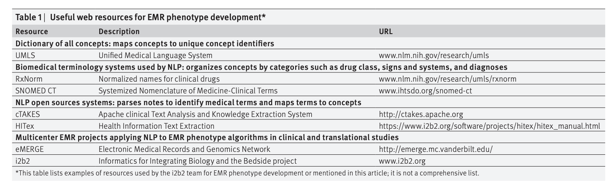

Development of phenotype algorithms using electronic medical records and incorporating natural language processing
Website
https://www.bmj.com/content/350/bmj.h1885
Objective
To present a roadmap of the tools and methods used to develop EMR phenotype algorithms in depression,9 diabetes mellitus (V Kumar, in preparation), inflammatory bowel disease (ulcerative colitis and Crohn’
s disease),10 multiple sclerosis,11 and rheumatoid arthritis, as part of
the i2b2 project
.
Keywords
Phenotype algorithms, EMR
Content
-
Basic components
-
The research question
-
the major research objectives, the ideal study design and population.
-
For example, the initial objective of the rheumatoid arthritis study was to determine the genetic risk factors for the disorder.
-
In genetic studies, a clean phenotype is needed to ensure adequate power to detect risk alleles associated with the disease. Thus, we aimed to develop a classification algorithm for rheumatoid arthritis that would identify a sufficient number of patients with a high positive predictive value (PPV>
90%) for the disorder. Research database of structured EMR data.
-
Research database of structured EMR data
-
Systematically link several terms to a concept
-
Two cases:
-
McCormick PJ, Elhadad N, Stetson PD. Use of semantic features to classify patient smoking status. AMIA Annu Symp Proc 2008:450-4.
-
Savova GK, Ogren PV, Duffy PH, Buntrock JD, Chute CG. Mayo clinic NLP system for patient smoking status identification. J Am Med Inform Assoc 2008;
15:25-8.
-
Unified Medical Language System
-
Such databases include the Systematized Nomenclature of Medicine-Clinical Terms (SNOMED CT), which organizes health terminologies into categories (such as body structure or clinical finding), and RxNorm, which links drug names to other drug names in major pharmacy and drug interaction databases (table 1).
-
Natural language processing
-
Some websites

-
Methods used to develop EMR phenotype algorithms
-
// The PPV = the accuracy of an algorithm
PPV = (sensitivity ×
prevalence)/[sensitivity ×
prevalence + (1−
specificity) ×
(1−
prevalence)]
-
Training set
A phenotype with a substantial number of candidate variables and lower prevalence would need a large training set to achieve a robust classification algorithm.
-
Developing the classification algorithm
Identified the predictive variables for the algorithm and their weights using the
adaptive LASSO
penalized
logistic regression
method.
-
Validation
-
Created a validation set comprising all patients classified with the phenotype, mixed with an additional 50% of random patients from the data mart.
-
EMR platform for clinical and translational studies